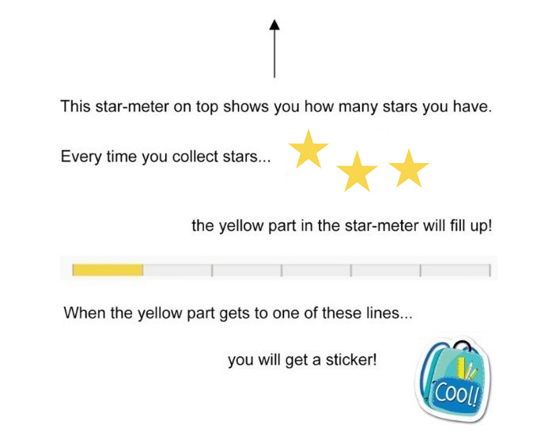

<!DOCTYPE html>

<html>
  <head>
    <meta charset="utf-8">
    <meta name="viewport" content="width=device-width, initial-scale=1, shrink-to-fit=no">
    <title>UNSW Monsters Game</title>
    <script src="./js/jspsych.js"></script>
    <script src="./js/plugins/jspsych-html-keyboard-response.js"></script>
    <script src="./js/plugins/jspsych-html-keyboard-response-copy.js"></script>
    <script src="./js/plugins/jspsych-survey-multi-choice.js"></script>
    <script src="./js/plugins/jspsych-html-button-response.js"></script>
    <script src="./js/plugins/jspsych-image-keyboard-response.js"></script>
    <script src="./js/plugins/jspsych-animation.js"></script>
    <script src="./js/welcome.js"></script>
    <script src="./js/jquery.min.js"></script>
    <link href="./js/css/jspsych_mod.css" rel="stylesheet" type="text/css"></link>
  </head>

  <body>
	  <div id="welcome"></div>
  </body>

  <script>

  // run the welcome
  welcome.run();

    // -------- Set up --------
    /* initialise timeline*/
    var timeline=[];
    var introloop=[];
    var turkID = 'C' + (Math.floor(Math.random() * 899999) + 100000).toString();
    // turkcode. not sure if necessary for kids version but maybe can serve as backup identifier.
	  var images = [
      // images for monsters and buttons 
		  './img/greenmonster.png',
		  './img/purplemonster.png',
		  './img/redmonster.png',
		  './img/yellowmonster.png',
		  './img/purplepractise.png',
      './img/redpractise.png',
      './img/none.png',
      './img/idk.png',
      // images for instructions
      './img/instruction_stars.png',
      './img/instruction_arrow.png',
      './img/instruction_starmeter1.png',
      './img/instruction_starmeter2.png',
      './img/instruction_sticker.png',
      './img/screen2.jpg',
      './img/screen3a.jpg',
      './img/screen3b.jpg',
      './img/screen3c.jpg',
      './img/screen3d.jpg',
      './img/screen4a.jpg',
      './img/screen4b.jpg',
      './img/screen4c.jpg',
      './img/screen4d.jpg',
      './img/screen5a.jpg',
      './img/screen5b1.jpg',
      './img/screen5b2.jpg',
      './img/screen5b3.jpg',
      './img/screen5b4.jpg',
      './img/screen5b5.jpg',
      './img/screen5b6.jpg',
      './img/screen5c.jpg',
      './img/screen5d.jpg',
      './img/screen5e.jpg',
      // images for stars
      './img/1star.png',
      './img/2star.png',
      './img/3star.png',
      './img/6star.png',
      './img/8star.png',
      // others
      './img/minions.gif', // minions cheering
      './img/thumbsup.gif' // cartoon cat giving thumbs up
	  ];


    // function to start the jsPsych experiment
    function startExperiment(){

      function download_data(data) {
        var csvString = jsPsych.data.dataAsCSV();
        var a         = document.createElement('a');
        a.href        = 'data:attachment/csv,' + csvString;
        a.target      = '_blank';
        a.download    = 'ExperimentData.csv';

        document.body.appendChild(a);
        a.click();
      }
      // record the turkcode in the jsPsych data
      jsPsych.data.addProperties({
        turkID: turkID
      });

      jsPsych.init({
        timeline: timeline,
        preload_images: images,
        // on_finish: function() {
        //   jsPsych.data.get().localSave('csv','test.csv')
        // },  // uncomment to locally save data file
        on_finish: function() {
          endExperiment(jsPsych.data.get().csv(), function() {document.write('<div id="endscreen" class="endscreen" style="width:1000px"><div class="endscreen" style="text-align:center; border:0px solid; padding:10px; font-size:120%; width:800px"><p><br><br><br>You\'re all done!<br><br><br> " <br><br>  Thanks for playing with us! <br><br> Now go get your stickers!</p></div></div>') }
        )}, // uncomment for cloud save
        show_progress_bar: true,
        auto_update_progress_bar: false
      });
      }


    // function to end the experiment
    function endExperiment(dataset,callback) {
      $.post('submit',{"content": dataset}); // uncomment to post data
      //console.log(dataset) // comment out to avoid console log
      setTimeout(callback,1000)
      // setTimeout specifies after a certain no of milliseconds
    }


    
    // -------- Randomisation set up

      function shuffle(array) {
        var currentIndex = array.length, temporaryValue, randomIndex;

        // While there remain elements to shuffle...
        while (0 !== currentIndex) {

          // Pick a remaining element...
          randomIndex = Math.floor(Math.random() * currentIndex);
          currentIndex -= 1;

          // And swap it with the current element.
          temporaryValue = array[currentIndex];
          array[currentIndex] = array[randomIndex];
          array[randomIndex] = temporaryValue;
        }

        return array;
      }

      init_choices1 = [1,2,3,6]

      // Randomise the starting position of the monsters
      imgnames = shuffle(["yellowmonster","redmonster","greenmonster","purplemonster"]);
      pointvals_firsthalf = shuffle([1,2,3,6]);
      pointvals_secondhalf = [];

  // -------- Randomly assign participant to condition
  var condition = ['static', 'dynamic'];
  var condition = jsPsych.randomization.sampleWithoutReplacement(condition, 1)[0]; // not sure what this does
  jsPsych.data.addProperties({
          condition: condition
        });

  // ------- Switch values based on condition

      if (condition == 'dynamic') {
        // Halfway through, change point value of 1 to 8
        for (var i = 0; i < pointvals_firsthalf.length; i++) {
          if (pointvals_firsthalf[i] == 1) {
            pointvals_secondhalf.push(8);
          } else {
            pointvals_secondhalf.push(pointvals_firsthalf[i]);
          }
        }
      } else {
        // Make values stay the same
        for (var i = 0; i < pointvals_firsthalf.length; i++) {
          if (pointvals_firsthalf[i] == 1) {
            pointvals_secondhalf.push(1);
          } else {
            pointvals_secondhalf.push(pointvals_firsthalf[i]);
          }
        }
      }


    // record initial point values in data
    jsPsych.data.addProperties({
           pointvals_firsthalf: pointvals_firsthalf
         });

    // -------- Set up of accumulating variables
    var pointsInitial = 0;
    var pointsAdded = 0;
    var totalPoints = 0;

    function addNum(pointsInitial,pointsAdded){
      return pointsInitial+pointsAdded
    };
    var pointsCurrent = addNum(pointsInitial,pointsAdded);

    pointsCurrent = addNum(pointsCurrent,pointsAdded);

    // -------- Instructions & quiz --------

    // images for animated instructions sequence
    var instruction_sequence = [
          'img/screen2.jpg',
          'img/screen2.jpg',
          'img/screen2.jpg',
          'img/screen2.jpg',
          'img/screen2.jpg',
          'img/screen3a.jpg',
          'img/screen3b.jpg',
          'img/screen3c.jpg',
          'img/screen3d.jpg',
          'img/screen4a.jpg',
          'img/screen4a.jpg',
          'img/screen4b.jpg',
          'img/screen4c.jpg',
          'img/screen4d.jpg',
          'img/screen4d.jpg',
          'img/screen5a.jpg',
          'img/screen5b1.jpg',
          'img/screen5b2.jpg',
          'img/screen5b3.jpg',
          'img/screen5b4.jpg',
          'img/screen5b5.jpg',
          'img/screen5b6.jpg',
          'img/screen5c.jpg',
          'img/screen5d.jpg',
          'img/screen5d.jpg',
    ]
    /* define the instruction block(s) */

    var instruction_block1 = {
      type: 'html-button-response',
      timing_post_trial: 0,
      choices: ['Next >'],
      on_trial_start: function() { setTimeout(function() {setDisplay("jspsych-btn","")}, 1000)},
      is_html: true,
      timeline: [
        {stimulus:
              "<p>In this game, you will see some different monsters on the screen.</p> " +
              "</img>" +
              "</img>" +
              "<p>When you <strong>tap</strong> on a monster, " +
              "it will give you some stars!</p>" +
              "<p> Every monster can give you stars, but every monster is different! </p>" 
              },
      ]
    };

    // animated instructions re: progress bar + stickers
    var instruction_block2={
        type: 'animation',
        stimuli: instruction_sequence,
        frame_time: 800,
        choices: jsPsych.NO_KEYS,
        timing_post_trial: 0,
    } 

    var instruction_block3={
        type: 'html-button-response',
        timing_post_trial: 0,
        stimulus: "</img>",
        choices: ['Got it!'],
    }

    timeline.push(instruction_block1);
    timeline.push(instruction_block2);
    timeline.push(instruction_block3); 


    /* define attention check block */

    var instruction_check = {
        type: 'html-button-response',
        timing_post_trial: 0,
        choices: ['I\'m ready!'],
        stimulus: "<p align='center'></p>",
        // cue for experimenter to ask attention check question
      };
    timeline.push(instruction_check);

    // -------- the experiment itself -------

    // the "click on a monster" part of the trial...
    var monster = {
        type: 'html-button-response',
        stimulus: "",
        button_html: '<button class="jspsych-btn-monsters"></button>', // css to force monster buttons to render as squares on iPad
        choices: imgnames,
        post_trial_gap: 100,
    }


    // the "see the feedback" part of the trial (1st half)...
    var feedback1 = {
        type: 'html-keyboard-response',
        is_html:true,
        stimulus: function(){
            var last_monster = jsPsych.data.get().last(1).values()[0].button_pressed;
            return " ";
            },
        choices: jsPsych.NO_KEYS,
        trial_duration: 1000,
        on_start: function() {
            var last_monster = jsPsych.data.get().last(1).values()[0].button_pressed;
            return pointsAdded = pointvals_firsthalf[last_monster];
            },
        on_finish: function(data){
            pointsCurrent = pointsCurrent + pointsAdded;
            data.earnedThis = pointsAdded;
            data.earnedCumulative = pointsCurrent;
            // if condition is static, one star will translate to more progress bar real estate than in dynamic
            if (condition == 'dynamic') {
              jsPsych.setProgressBar(pointsCurrent/(6*trials1.repetitions+8*trials2.repetitions))
            } else if (condition == 'static') {
              jsPsych.setProgressBar(pointsCurrent/(6*trials1.repetitions+6*trials2.repetitions))
            }
      }
    };
        // the "see the feedback" part of the trial (2nd half)...
    var feedback2 = {
        type: 'html-keyboard-response',
        is_html:true,
        stimulus: function(){
            var last_monster = jsPsych.data.get().last(1).values()[0].button_pressed;
            return "";
        },
        choices: jsPsych.NO_KEYS,
        trial_duration: 1000,
        on_start: function() {
            var last_monster = jsPsych.data.get().last(1).values()[0].button_pressed;
            return pointsAdded = pointvals_secondhalf[last_monster];
       },
        on_finish: function(data){
            pointsCurrent = pointsCurrent + pointsAdded;
            data.earnedThis = pointsAdded;
            data.earnedCumulative = pointsCurrent;
            if (condition == 'dynamic') {
              jsPsych.setProgressBar(pointsCurrent/(6*trials1.repetitions+8*trials2.repetitions))
            } else if (condition == 'static') {
              jsPsych.setProgressBar(pointsCurrent/(6*trials1.repetitions+6*trials2.repetitions))
            }
        }
    };


    // push # copies of it to the timeline
    var trials1 = {
      timeline: [monster, feedback1],
      repetitions: 50,
      randomize_order: false,
    };


    // push # copies of it to the timeline
    var trials2 = {
      timeline: [monster, feedback2],
      repetitions: 50,
      randomize_order: false,
    };

    // -------- End screen and post-test questions --------
    var end_game = {
      type: 'html-button-response',
      is_html: true,
      on_start: function(){
          document.querySelector('#jspsych-progressbar-container').style.display = 'none';
        },
      timing_post_trial: 0,
      choices: ['Okay!'],
      stimulus: function(){
          var totalPoints = jsPsych.data.get().last(1).values()[0].earnedCumulative;
          return "<br><br>Thanks for playing with us! You earned " + totalPoints + " stars!<br><br>" + 
          " <br> <br>" + // can remove this gif if needed
          "Wow, that\'s a <b>lot</b> of stars! <br> " +
          "Now we just a few more questions for you...<br>"
        },
      timing_post_trial: 0,
    }

    var posttest1 = {
      type: 'html-button-response',
      choices: ["yellowmonster", "purplemonster", "redmonster", "greenmonster","none","idk"],
      button_html: '<button class="jspsych-btn-monsters"></button>',
      post_trial_gap: 800,
      is_html: true,
      timeline: [
        {stimulus:
            "Which, if any, of these monsters ever gave you <b>1 star</b>?"+
            "</p>"
      },
     ],
     on_finish: function(data){
        var pt_pressed = jsPsych.data.get().last(1).values()[0].button_pressed;
        var pt_chosen = pointvals_firsthalf[pt_pressed];
        if (pt_chosen == 1){
          data.posttest = 'correct'
        } else {
          data.posttest = 'incorrect'
        }
      }
    }

    var posttest2 = {
      type: 'html-button-response',
      choices: ["yellowmonster", "purplemonster", "redmonster", "greenmonster","none","idk"],
      button_html: '<button class="jspsych-btn-monsters"></button>',
      post_trial_gap: 800,
      is_html: true,
      timeline: [
        {stimulus:
            "Which, if any, of these monsters ever gave you <b>2 stars</b>?"+
            "</p>"
      },
     ],
     on_finish: function(data){
        var pt_pressed = jsPsych.data.get().last(1).values()[0].button_pressed;
        var pt_chosen = pointvals_secondhalf[pt_pressed];
        if (pt_chosen == 2){
          data.posttest = 'correct'
        } else {
          data.posttest = 'incorrect'
        }
      }
    }

    var posttest3 = {
      type: 'html-button-response',
      choices: ["yellowmonster", "purplemonster", "redmonster", "greenmonster","none","idk"],
      button_html: '<button class="jspsych-btn-monsters"></button>',
      post_trial_gap: 1000,
      is_html: true,
      timeline: [
        {stimulus:
            "Which, if any, of these monsters ever gave you <b>3 stars</b>?"+
            "</p>"
      },
     ],
     on_finish: function(data){
        var pt_pressed = jsPsych.data.get().last(1).values()[0].button_pressed;
        var pt_chosen = pointvals_firsthalf[pt_pressed];
        if (pt_chosen == 4){
          data.posttest = 'correct'
        } else {
          data.posttest = 'incorrect'
        }
      }
    }

    var posttest4 = {
      type: 'html-button-response',
      choices: ["yellowmonster", "purplemonster", "redmonster", "greenmonster","none","idk"],
      button_html: '<button class="jspsych-btn-monsters"></button>',
      post_trial_gap: 800,
      is_html: true,
      timeline: [
        {stimulus:
            "Which, if any, of these monsters ever gave you <b>6 stars</b>?"+
            "</p>"
      },
     ],
     on_finish: function(data){
        var pt_pressed = jsPsych.data.get().last(1).values()[0].button_pressed;
        var pt_chosen = pointvals_secondhalf[pt_pressed];
        if (pt_chosen == 4){
          data.posttest = 'correct'
        } else {
          data.posttest = 'incorrect'
        }
      }
    }

    var posttest5 = {
      type: 'html-button-response',
      choices: ["yellowmonster", "purplemonster", "redmonster", "greenmonster","none","idk"],
      button_html: '<button class="jspsych-btn-monsters"></button>',
      post_trial_gap: 800,
      is_html: true,
      timeline: [
        {stimulus:
            "Which, if any, of these monsters ever gave you <b>8 stars</b>?"+
            "</p>"
      },
     ],
     on_finish: function(data){
        var pt_pressed = jsPsych.data.get().last(1).values()[0].button_pressed;
        var pt_chosen = pointvals_secondhalf[pt_pressed];
          if (condition == 'dynamic'){
            if (pt_chosen == 8){
            data.posttest = 'correct'
            } else {
            data.posttest = 'incorrect'
          }
        } else {
          if (pt_pressed == 4) { // if "none" was chosen in static
            data.posttest = 'correct'
          }
        }
  
      }
    }

    var posttest6 = {
      type: 'html-button-response',
      choices: imgnames,
      button_html: '<button class="jspsych-btn-monsters"></button>',
      post_trial_gap: 800,
      is_html: true,
      timeline: [
        {stimulus:
            "Which monster did you like the most?"+
            "</p>"
      },
     ]
    }


    timeline.push(trials1);
    timeline.push(trials2);
    timeline.push(end_game);
    timeline.push(posttest1);
    timeline.push(posttest2);
    timeline.push(posttest3);
    timeline.push(posttest4);
    timeline.push(posttest5);
    timeline.push(posttest6);
    /* start by running the "welcome" */

  </script>
</html>
